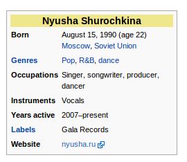

Justin Cormack
-- defines factorial
function fact (n)
if n == 0 then
return 1
else
return n * fact(n - 1)
end
end
a = "a string"; type(a) --> "string"
a = 2 ; type(a) --> "number"
a = fact ; type(a) --> "function"
a = nil ; type(a) --> "nil"
a = true ; type(a) --> "boolean"
a = {1, 2, 3} ; type(a) --> "table"
a = {name = 1}; type(a) --> "table"
Only one kind of number whether integer or floating point.
a = 2 * 4
b = tonumber("65")
c = math.abs(-1)
d = 3.2 * math.sqrt(42)
Strings are treated as binary bytes, not zero terminated. Need a library for UTF8 operations.
a = "test " .. "appending"
b = "append a number " .. tostring("65")
c = "append a number " .. 65
utf = "รีโอเดจาเนโร"
#utf --> 36 -- length in bytes, not characters
These must have ASCII names, plus underscore, or numbers after the first character. Default is global, local in a block (eg function, do .. end)
test1 = 3 -- global do local test1 = "not the global" end test1 = 4 -- global
First class functions, tail recursion supported
function double(a) return a * 2 end double = function(a) return a * 2 end
function double_both(a, b) return a * 2, b * 2 end print(double_both(1, 2)) x, y = double_both(6, 7) print(x, y) x, y = y, x print(x, y)
Any value that is not false or nil is truthy (including 0)
function is2(a) if a == 2 then return true else return false end end function is2(a) if a == 2 then return true else return false end end
You can use boolean and, or, not.
function is2or3(a) return a == 2 or a == 3 end b = nil c = b or "b was nil" c --> "b was nil"
local sum = 0 for i = 1, 10 do sum = sum + i end -- i no longer defined here, local to loop
a = {1, 2, 3} -- standard dense 1-based array
a[1] --> 1
#a --> 3
a[#a + 1] = 4 -- extend array
#a --> 4
table.concat(a, ", ") --> "1, 2, 3"
b = {[4] = 3, [10] = 4}
b[10] --> 4
b[1] --> nil
b[4] = 6
-- #b not usefully defined if sparse
a = {10, 11, 12, 13}
for i = 1, #a do print(i, a[i]) end
for k, v in ipairs(a) do print(k, v) end
a = {name = "Lua", age = 19, f = function(x) return x + 2 end}
a.name --> "Lua"
a["name"] --> "Lua"
a.f(1) --> 3
index = "age"
a[index] --> 19
a.extra = 55
a = {name = "Lua", age = 19, f = function(x) return x + 2 end}
for k, v in pairs(a) do
print(k, v)
end
a = {1, 2, 3, 4, name = "Lua", age = 19, f = function(x) return x + 2 end}
for k, v in pairs(a) do
print(k, v)
end
for i = 1, #a do print(i, a[i]) end
print "test"
function f(tab)
for k, v in pairs(tab) do print(k, v) end
end
f{name = "Roberto", location = "Rio"}
p = {}
function p:setname(name) self.myname = name end
function p:name(name) return self.myname end
p:setname("Justin")
print(p:name())
print(p.name(p)) -- this is all that : means
p = {}
function p:setname(name) self.myname = name end
function p:name(name) return self.myname end
return p
Then call with
tab = require "module name"
tab:setname("Justin")
In a Wikipedia page you have text and then you have templates to do all the formatting, complex functionality.
{{Infobox musical artist
| name = Nyusha Shurochkina
| image =
| years_active = 2007–present
| background = solo_singer
...
}}
This will render out the infobox

{{{2|}}}{{
#ifeq: {{{1|}}} | {{padleft:{{{1|}}}| {{{2|}}}4 }}
| {{#ifeq: {{{1|}}} | {{padleft:{{{1|}}}| {{{2|}}}6 }}
| {{#ifeq: {{{1|}}} | {{padleft:{{{1|}}}| {{{2|}}}8 }}
| {{#ifeq: {{{1|}}} | {{padleft:{{{1|}}}| {{{2|}}}9 }}
| 9
| 8
}}
| {{#ifeq: {{{1|}}} | {{padleft:{{{1|}}}| {{{2|}}}7 }}
| 7
| 6
}}
}}
| {{#ifeq: {{{1|}}} | {{padleft:{{{1|}}}| {{{2|}}}5 }}
| 5
| 4
}}
}}
| {{#ifeq: {{{1|}}} | {{padleft:{{{1|}}}| {{{2|}}}2 }}
| {{#ifeq: {{{1|}}} | {{padleft:{{{1|}}}| {{{2|}}}3 }}
| 3
| 2
}}
| {{#ifeq: {{{1|}}} | {{padleft:{{{1|}}}| {{{2|}}}1 }}
| 1
| 0
}}
}}
}}
Call with #invoke or wrap in a standard template
{{#invoke:MyLuaTemplate|function|name=Justin|url=http://en.wikipedia.org/}}
local m = {
function1 = function(frame)
name = frame.args.name or "unknown"
return "Hello from Lua " .. name
end,
}
return m
From now we are going to go live...
{kind=link}